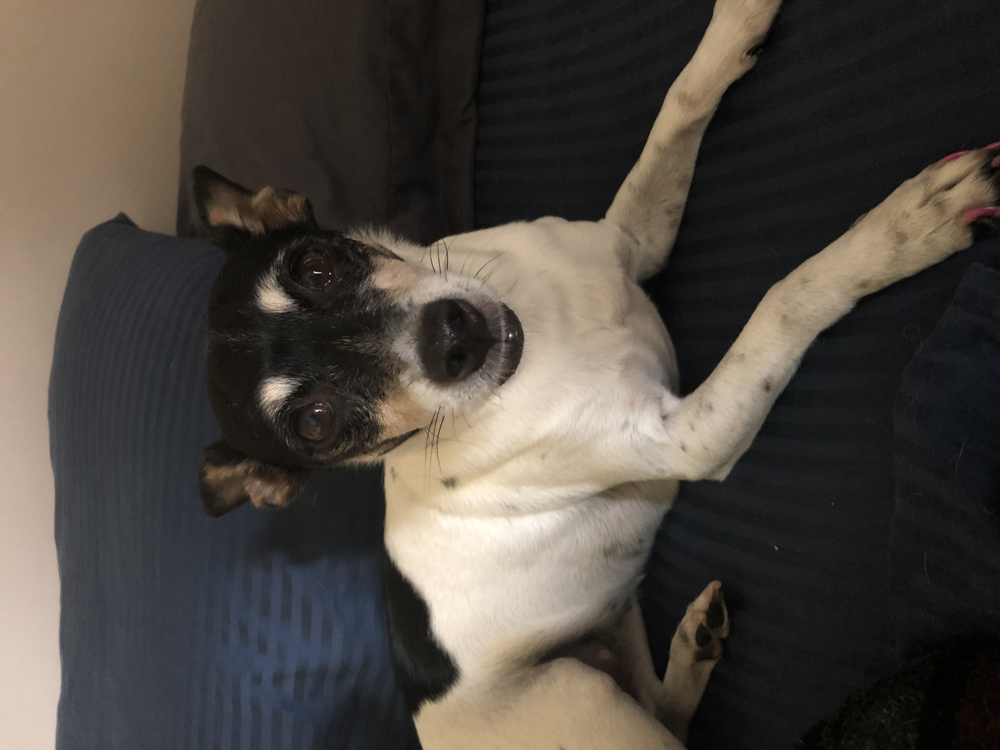
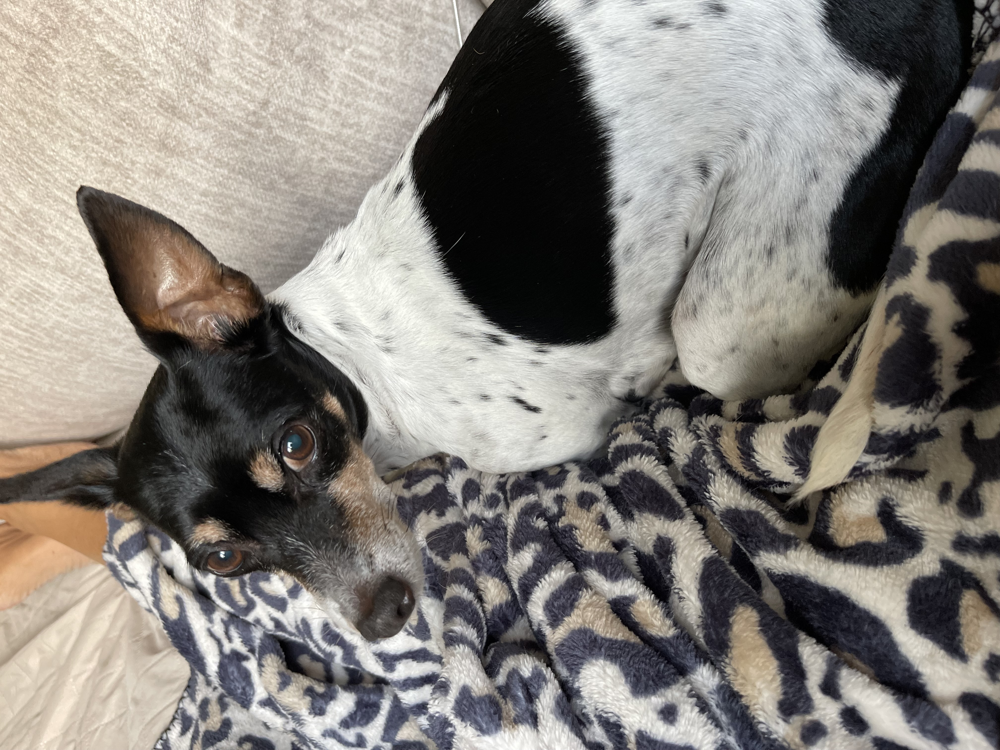
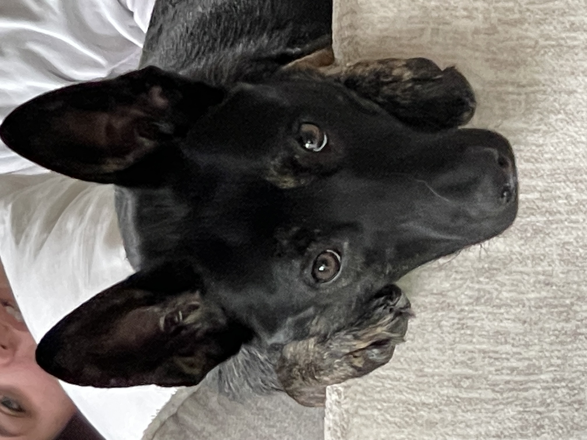
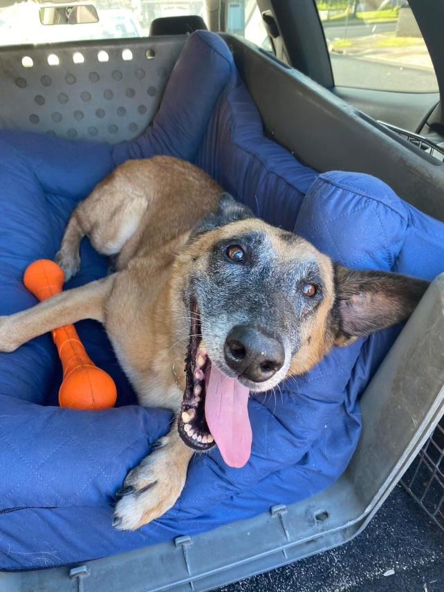
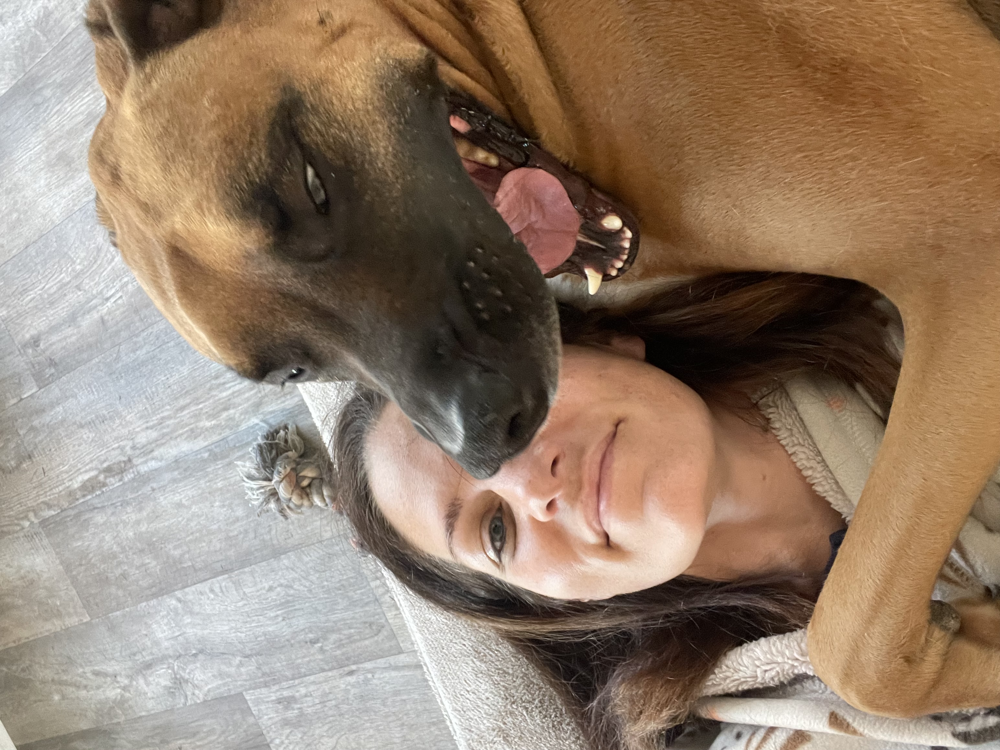
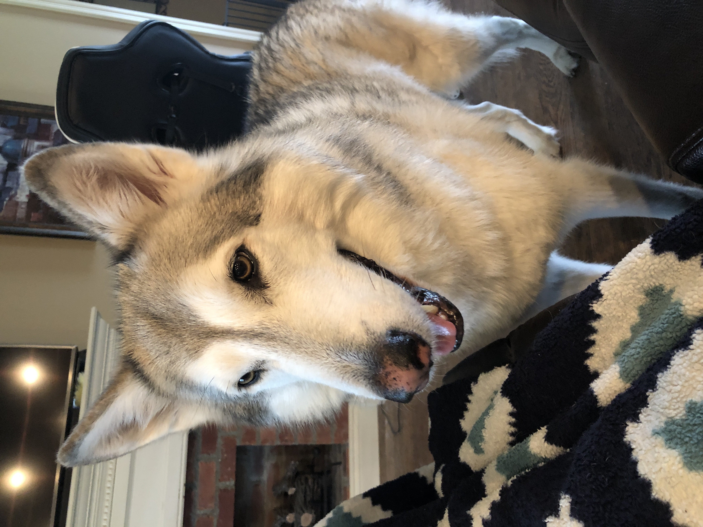

Today, we are going to look at photos of my dogs! We will start from the smallest and work our way to the largest.
Meet Rosie. She's approximately 12lbs (possibly the runt of her litter) and believed to be a Rat Terrier mix. She has her 13th birthday coming up in a month. She loves going everywhere with me in the car and gets really excited at drive through windows because the Starbucks employees have spoiled her. Now she expects treats from the pharmacy window and bank, too! She is also known as Rosalita, Rose, and Lil Silk. I adopted her and her sister, Daisy, when they were just 8 weeks old.
Next up is Daisy! This is Rosie's littermate and sister. Quite a bit taller, she's also quite heavier at 16lbs. Obviously, we will celebrate her 13th birthday next month, as well. Daisy enjoys chasing anything that moves in the backyard (or above it). She loves barking at birds flying over. She's a wonderful huntress and is known to bring an occasional gift to her humans. Most recently, it was a petrified lizard. Her nicknames are DeeDee and DaisyBug.
This is Josie, AKA JoJo and FastPaws. Josie was found in a ditch with her two siblings at only a day or two old. Luckily, a rescue in South Carolina new of a common "litter ditching area" and regularly scoped the area. All three puppies survived and as soon as Josie was old enough, we adopted her into our pack. She turned one last month and we had a fantastic little birthday party for her. She is the most generous of all our dogs. Anytime someone enters the room, Josie will present them with one of her toys, displaying it proudly. She's a very affectionate dog and super cuddly. We had no idea what her breed was when we first got her, but as she's growing, she looks more and more like a Dutch Shepherd. She's about 35lbs and the fastest of all our dogs!
Say hello to Drake! Drake is a little over 10 years old and a Belgian Malinois. He weighs approximately 70lbs. Drake has a super cool backstory. My husband served 10 years in the Air Force as a k9 handler. Right after the handlers graduate their course, they are assigned their first working dog. Drake had just graduated his puppy course to become an explosive ordinance dog (aka bomb dog). They were assigned to each other and learned along the way. Once my husband was sent to a new duty station, they were separated. He vowed to adopt Drake when he retired. It can be somewhat difficult to track a military working dog. They switch handlers and duty stations somewhat often. Last Fall, my husband got word Drake's last handler kept him after he was retired. My husband was absolutely devastated. The current handler always gets first dibs, so there was no fighting it. About 2 months later, my husband got an e-mail from the handler state he was being moved to England and did not want to put undue travel stress on Drake during his retirement (he has definitely been on enough overseas flights). He asked my husband if he was still interested in having Drake. Next thing I know, Drake is on a flight from Hawaii to Texas, courtesy of a foundation that helps relocate retired service dogs. They drove him from Texas to our front door in North Carolina to reunite him with my husband. The two have been inseparable since. Drake is loving his retired life with our pack and is learning how to be a regular dog. Our other dogs have taught him how to beg, relax, and wrestle in the backyard. He's such a little lover.
This is Leo! He was Carson when we picked him up from the animal shelter in Colorado as a puppy. He had been returned twice at only 12 weeks old. Previous adopters stated he was to rambunctious and shredded shoes. We love puppies and challenges. So, Carson became Leo Leopold Nicodemus Renaldi on the way home with us that day. He's now 106lbs and like a bull in a china shop wherever he is. I'm not exaggerating. He swung his backside around knocking my mother-in-law over last year. She broke her ankle! He is a Rhodeisian Ridgeback and possibly mixed. He turns 5 this July and will most likely have a pool party in the backyard with lots of snacks. This chunky boy lives for snacks. We call him by his full name on occassion, but I mainly call him Vulture. He likes hovering over the other dogs until they are done eating so he can lick their bowls, too! Besides scavenging for snacks, his favorite activities include sunning himself on the back deck and giving kisses.
Last but not least, meet Mica (mi-cuh). She is 85% Gray Wolf and 15% Malamute. She's the alpha of our pack and respected by all of the other dogs. She doesn't bark like the others, but will occassionally howl (it's a beautiful sound). My husband adopted her from someone while living in Japan. She was getting bullied by their other dogs and she was just a wolf pup at the time. She had some very bad habits when he first had her, but she's been broken of 98% of them. She's still a bit food aggressive, but the other dogs know to steer clear (even Leo). She does not respond to commands unless there are treats in hand. Her favorite activies include laying outside when it's cold, howling at me right after I sit down to get up and either let her out or get her a treat, and napping. She used to love swimming in the ocean, but we haven't taken her here. She has many nicknames! Mimi, Stinky (she doesn't smell), Stinkbug (I don't know why my husband calls her this), Princess, Mama, and Pretty Lil Wolfgirl are a few commonly used. Mica turns 10 this September and will enjoy a steak (on the rare side) for her dinner that day. She's had 9 birthday steaks with us. She weighs around 125lbs and is quite tall. On her hind legs, she can easily drape her paws over my husbands shoulders and he's 6'2"!
Introducing a new dog into your pack can be a daunting task. Here's a link to some great tips to make the process smoother for everyone involved!
How to make a proper intro!A few things covered in the above link: